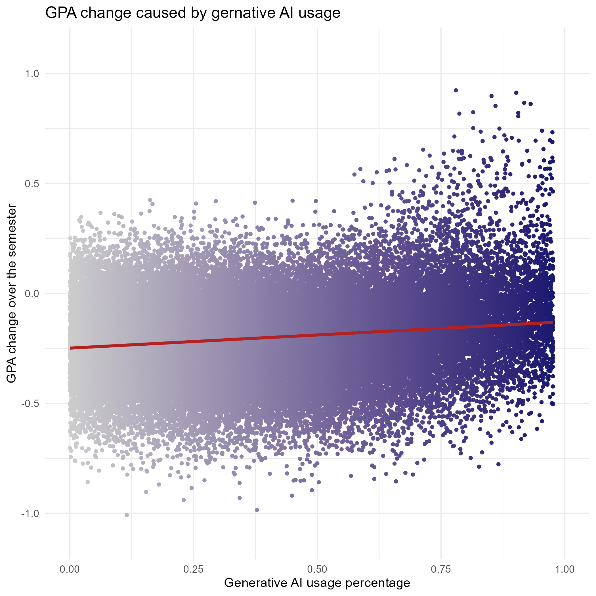
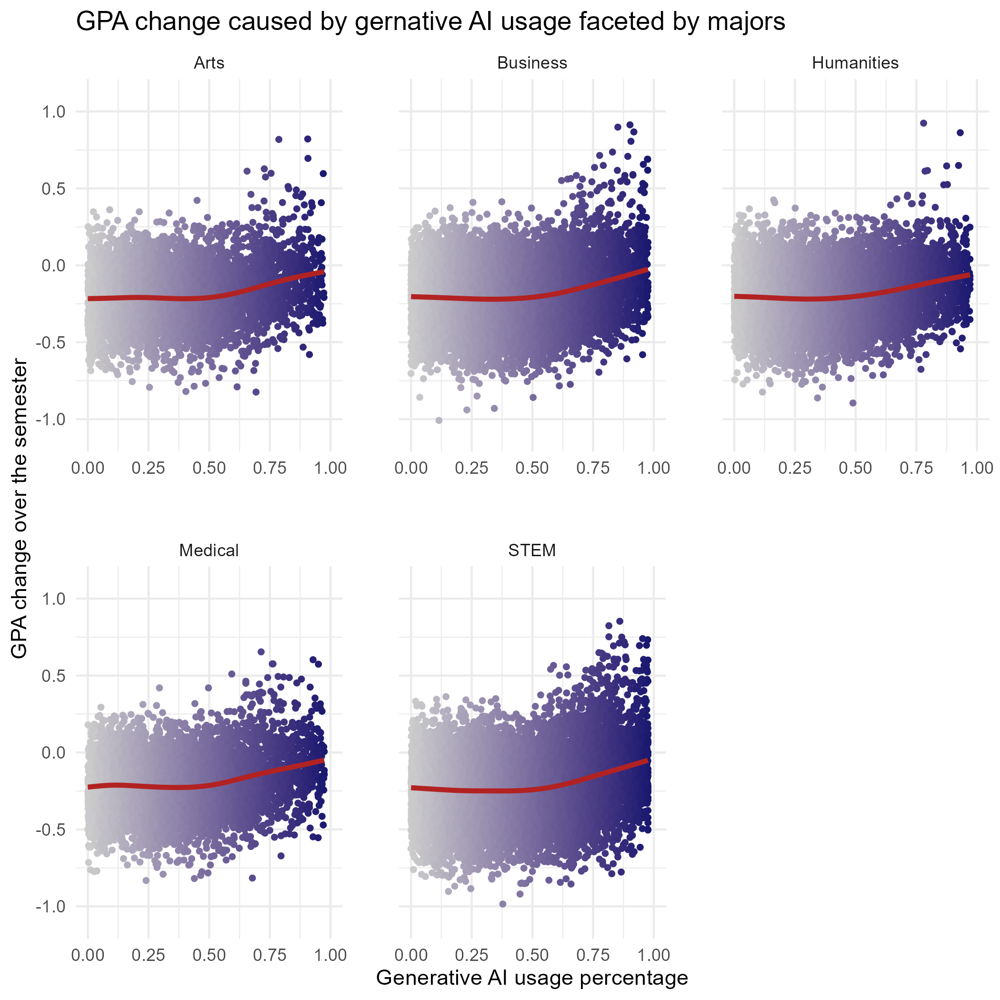
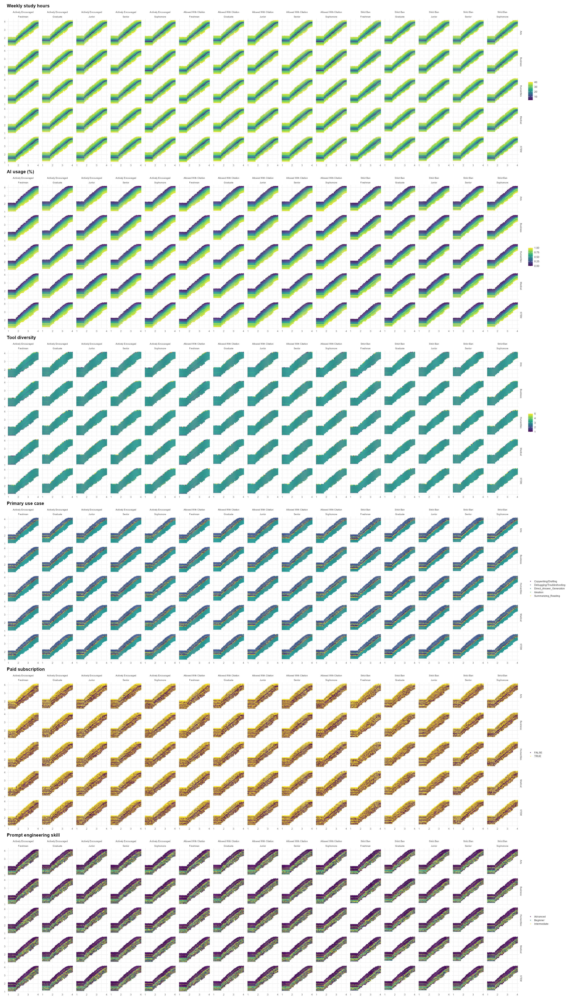

Code
library(here)
library(tidyverse)
library(tidymodels)
library(bonsai)
library(lightgbm)Paul Gustav Hoffmann
July 22, 2026
Now that I have been working on answering the 2 research questions with statistical methods, I’m ready to present you the final results of the analysis.
Before we can draw any plots, we need to analyze the question. It consists of three dimensions:
Given directly by the Major_Category column in the dataset.
To measure this, we first need to define what “effect on the GPA” means: it is the change in GPA over one semester. Since we already have pre- and post-semester GPA, this is calculated as:
\[ \text{GPA\_Change\_Over\_Semester} = \text{Post\_Semester\_GPA} - \text{Pre\_Semester\_GPA} \]
The dataset has several columns that could be used to model this: e.g. the tool diversity or having a paid subscription. But the following definition is enough for our purposes: the heaviness of AI usage is the share of AI-assisted study time in the total study time (Traditional_Study_Hours & Weekly_GenAI_Hours):
\[ \text{Percentage\_Of\_AI\_Usage} = \frac{\text{Weekly\_GenAI\_Hours}}{\text{Traditional\_Study\_Hours} + \text{Weekly\_GenAI\_Hours}} \]
Now that we have all the data needed for answering the question we can plot it. At first I am interested in the GPA_Change_Over_Semester by the Percentage_Of_AI_Usage without looking at the Major_Category to see the general trend first.
We can map the Percentage_Of_AI_Usage to the x-axis and the GPA_Change_Over_Semester on the y-axis. Going through each student of the dataset and visualizing them in this plot via a point geom does the job. To better see the trend we can also use a smooth geom as this gives us a trend line.

Now we can also facet the data into the Major_Category which gives us a third dimension. To avoid a convoluted 3D plot we instead use faceting to divide the majors into plots with two dimensions again.

These plots indicate the following trend equally for all majors:
If the Percentage_Of_AI_Usage is less than half of the total study hours it doesn’t seem to have an effect on the GPA_Change_Over_Semester. However, around the 50% mark there is a small linear decrease of the GPA_Change_Over_Semester in favor of the Traditional_Study_Hours.
These plots also show as a side effect that there are some people with heavy AI usage who get an extraordinarily worse GPA change than the rest. Though the GPA change seems to be positive for all majors in general.
Now the question arises if a student should even use AI in the first place. The most sensible answer would probably be: yes, but only to a certain degree. This question will be part of the second question.
The answer on how to use AI for the best GPA score is a difficult one to answer. First, it is dependent on the student’s current situation; second, there are many different parameters on how AI can be used. To find all correlations and do some half-baked conclusions is not enough.
So the idea is to train a model which takes these input parameters and gives the suggestions as output parameters including the decision variable which is the Post_Semester_GPA. The Pre_Semester_GPA, on the other hand, will be an input parameter.
To answer the question we then try all possible combinations of input parameters with their predictions and plot them into a deep faceted plot analyzing the trends.
First we need to define the context variables (input parameters on the student’s situation including their Pre_Semester_GPA), the decision variables on how to use generative AI for the best Post_Semester_GPA, which is the target variable.
There will be some unused variables, as they are questionable in their relationship to the context/decision variables and make the faceting with all combinations hard to present and too difficult to compute. The Student_ID variable also holds no valuable information and will be dropped.
Dropped variables:
Perceived_AI_Dependency
Anxiety_Level_During_Exams
Skill_Retention_Score
Burnout_Risk_Level
Context variables:
Pre_Semester_GPA
Major_Category
Year_of_Study
Institutional_Policy
Target variable:
Post_Semester_GPA
Decision variables:
Weekly_Study_Hours
Percentage_Of_AI_Usage
Tool_Diversity
Primary_Use_Case
Paid_Subscription
Prompt_Engineering_Skill
Import the libraries:
Fit the model:
get_dataset <- function() {
data <- read_csv(here("data", "processed", "data_clean.csv")) |>
select(-c(
Student_ID, Perceived_AI_Dependency, Anxiety_Level_During_Exams,
Skill_Retention_Score, Burnout_Risk_Level, GPA_Change_Over_Semester
))
}
build_model_fit <- function(data) {
recipe <- recipe(Post_Semester_GPA ~ ., data = data) |>
step_mutate_at(all_logical_predictors(), fn = as.numeric) |>
step_novel(all_nominal_predictors()) |>
step_unknown(all_nominal_predictors()) |>
step_integer(all_nominal_predictors())
specification <- boost_tree() |>
set_engine("lightgbm") |>
set_mode("regression")
model_fit <- workflow() |>
add_recipe(recipe) |>
add_model(specification) |>
fit(data = data)
}
dataset <- get_dataset()
model_fit <- build_model_fit(dataset)To test the quality of the model we simulate the creation of the model under a test-train-split. The idea is as follows: If the model trained under the train data predicts the test data notably better than an arbitrary Pre_Semester_GPA = Post_Semester_GPA prediction (the baseline), then the model has proven its quality. I chose an 80%-train-data & 20%-test-data split which is quite conventional.
split <- initial_split(dataset, prop = 0.8)
train_data <- training(split)
test_data <- testing(split)
simulated_model_fit <- build_model_fit(train_data)
predictions <- test_data |>
mutate(.pred = predict(simulated_model_fit, new_data = test_data)$.pred)
model_metrics <- predictions |>
metrics(truth = Post_Semester_GPA, estimate = .pred)
baseline_metrics <- predictions |>
metrics(truth = Post_Semester_GPA, estimate = Pre_Semester_GPA)
list(Model_Metrics=model_metrics, Baseline_Metrics=baseline_metrics)$Model_Metrics
# A tibble: 3 × 3
.metric .estimator .estimate
<chr> <chr> <dbl>
1 rmse standard 0.146
2 rsq standard 0.912
3 mae standard 0.114
$Baseline_Metrics
# A tibble: 3 × 3
.metric .estimator .estimate
<chr> <chr> <dbl>
1 rmse standard 0.276
2 rsq standard 0.855
3 mae standard 0.231As we can see, the model shows a lesser loss both with the RMSE and the MAE metrics. Also the RSQ is closer to 1. In a nutshell: This model seems to perform good.
It it interesting to see which of the features are important to the model. We can calculate the feature importance as follows:
# A tibble: 10 × 4
Feature Gain Cover Frequency
<chr> <dbl> <dbl> <dbl>
1 Pre_Semester_GPA 0.938 0.311 0.21
2 Weekly_Study_Hours 0.0188 0.202 0.246
3 Primary_Use_Case 0.0154 0.0636 0.115
4 Percentage_Of_AI_Usage 0.0133 0.155 0.205
5 Year_of_Study 0.00931 0.153 0.089
6 Prompt_Engineering_Skill 0.00378 0.0540 0.0463
7 Institutional_Policy 0.000985 0.0288 0.03
8 Paid_Subscription 0.000568 0.0141 0.0203
9 Major_Category 0.000137 0.0100 0.021
10 Tool_Diversity 0.000111 0.00864 0.0177We can see that the Pre_Semester_GPA is the most important variable by a far margin. Other variables with some relevancy are the Weekly_Study_Hours, Primary_Use_Case, Percentage_Of_AI_Usage and the Year_of_Study. The other variables seem to be noise. Note that the feature importance indicates which variables are important for a better GPA. So we can already be quite certain that the Prompt_Engineering_Skill, Institutional_Policy, Paid_Subscription, Major_Category and Tool_Diversity won’t be important variables for finding the answer on what is best for the GPA.
First we need to define a student to use the model:
Second we want to build a table with all possible suggestion outputs:
hypothesis_space <- list(
Weekly_Study_Hours = seq(1, 40, by = 1),
Percentage_Of_AI_Usage = seq(0.0, 1.0, by = 0.01),
Tool_Diversity = 1:5,
Primary_Use_Case = c(
"Copywriting/Drafting", "Ideation", "Summarizing_Reading",
"Debugging/Troubleshooting", "Direct_Answer_Generation"
),
Paid_Subscription = c(TRUE, FALSE),
Prompt_Engineering_Skill = c("Beginner", "Intermediate", "Advanced")
)
hypothesis_grid <- cross_df(hypothesis_space)Then we combine our input with all possible suggestions:
Now we can use the model to predict a score for each suggestion:
The only thing needed now is printing the top results:
# A tibble: 10 × 7
Weekly_Study_Hours Percentage_Of_AI_Usage Tool_Diversity
<dbl> <dbl> <int>
1 37 0 2
2 38 0 2
3 39 0 2
4 40 0 2
5 37 0 3
6 38 0 3
7 39 0 3
8 40 0 3
9 37 0 4
10 38 0 4
Primary_Use_Case Paid_Subscription Prompt_Engineering_Skill
<chr> <lgl> <chr>
1 Debugging/Troubleshooting TRUE Advanced
2 Debugging/Troubleshooting TRUE Advanced
3 Debugging/Troubleshooting TRUE Advanced
4 Debugging/Troubleshooting TRUE Advanced
5 Debugging/Troubleshooting TRUE Advanced
6 Debugging/Troubleshooting TRUE Advanced
7 Debugging/Troubleshooting TRUE Advanced
8 Debugging/Troubleshooting TRUE Advanced
9 Debugging/Troubleshooting TRUE Advanced
10 Debugging/Troubleshooting TRUE Advanced
Predicted_Post_Semester_GPA
<dbl>
1 3.74
2 3.74
3 3.74
4 3.74
5 3.74
6 3.74
7 3.74
8 3.74
9 3.74
10 3.74I tried out many different combinations and the results were mostly the same.
To confirm this and to view the whole spectrum of good and bad suggestions we now need to draw the plot featuring all input combinations.
First we need to define all possible input parameters for the model to test:
To get the plot data, we need the following loop:
calculate_df is defined as follows:
calculate_df <- function(mc, ip, yos) {
combinations <- bind_rows(lapply(gpa_vector, function(gpa) {
build_combinations(gpa, mc, yos, ip, 50000)
}))
combinations <- combinations |>
mutate(
Predicted_Post_Semester_GPA = round(predict(model_fit, new_data = combinations)$.pred, 2)
)
# group_split is used for ordering the Pre_Semester_GPA values.
bind_rows(lapply(group_split(combinations, Pre_Semester_GPA), collapse_df))
}build_combinations just builds the combinations like before and enables variable input parameters and takes a slice to reduce the table size:
build_combinations <- function(pre_semester_gpa, major_category, year_of_study, institutional_policy, samples) {
hypothesis_grid |>
slice_sample(n = samples) |>
mutate(
Pre_Semester_GPA = pre_semester_gpa,
Major_Category = major_category,
Year_of_Study = year_of_study,
Institutional_Policy = institutional_policy
)
}collapse_df calculates the average for each GPA score prediction massively reducing the plot_data size to make the drawing of the plot even possible:
collapse_df <- function(predictions) {
get_mode <- function(x) {
if (all(is.na(x))) {
return(NA_character_)
}
modes <- table(x, useNA = "no")
names(modes)[which.max(modes)]
}
predictions |>
group_by(Predicted_Post_Semester_GPA) |>
summarise(
across(where(is.numeric), mean, na.rm = TRUE),
across(where(is.character) | where(is.logical), get_mode),
.groups = "drop"
)
}We make Major_Category, Year_of_Study and the Institutional_Policy facets for the plot yielding 75 plots. The x-axis is the Pre_Semester_GPA and the y-axis the Post_Semester_GPA (predictions).
This is the layout for the plot. On the layout we now want to map the suggestion as a third dimension to each plot as faceting is too convoluted already on this scale. The third dimension, however, is visualized by a color scale making it readable.
As there are six suggestion types we need to facet the plot further on the top level. This results in 450 individual plots:

Looking at the plot there are some things that can be said right away:
The input parameters Major_Category, Year_of_Study, Institutional_Policy and Pre_Semester_GPA don’t matter for the suggestion, as every plot within the six suggestions looks the same. In conclusion the suggestions are independent of the student’s situation given the input parameters.
Now that this is settled let’s see what the uniform suggestions for AI usage are:
Weekly_Study_Hours:
This for sure is the most surprising result as there doesn’t seem to be a straight answer:
We can see that less study hours are associated with a neutral GPA change. High study hours are associated with both the best and the worst changes. The conclusion I draw from this is that the study hours don’t matter per se. It’s probably a case of “study smarter, not harder”.
Percentage_Of_AI_Usage:
You should use AI as little as possible, or even more extreme, not at all.
Tool_Diversity:
It is pretty evenly distributed at around the 3 tools mark on average, but every color can be seen everywhere when looking closely. This suggests that the tool diversity doesn’t truly matter (this is also supported by the feature importance table).
Primary_Use_Case:
You should use AI for Copywriting/Debugging, but avoid it for direct answer generation. The other use cases don’t give as strong a signal, but they are still positive or at least neutral.
Paid_Subscription:
The results are kinda all over the place, but you can see that a paid subscription is associated with a more positive GPA change. So you should use a paid subscription, but it doesn’t matter that much which is also shown in the feature importance table.
Prompt_Engineering_Skill:
Best is, when your prompt engineering skill is advanced, but all colors can be seen everywhere. What I make from this is that the prompt engineering skill does indeed help, but doesn’t guarantee a better GPA. From the feature importance table it is also clear that this variable isn’t that important.
This is the general suggestion given the dataset and my model using the variables with a clear signal and feature importance to the model:
Study smarter, not harder, while using AI as little as possible.
But if you use it, ensure it's rather for arbitrary work like debugging and not for straight up solving your exercises.
That the results are so uniform might be a result of the synthetic nature of the dataset or by chance some optimizations in the calculation (collapse_df and slice_sample). However, I think that these results are sensible in a way and convey a consistent message without contradiction.
Given the synthetic nature of the dataset every plot only echoes what is modeled in the data. Still the results are reasonable and it was a great opportunity to get my hands on machine learning and statistical modelling. In short the final message is that AI should be used for a student to assist the learning process, not to replace it.